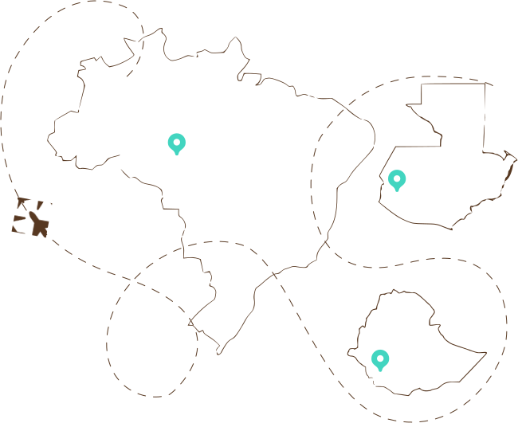

Кликните на любую страну, чтобы узнать подробнее о сортах кофе, которые мы используем для приготовления напитков


Кликните на любую страну, чтобы узнать подробнее о сортах кофе, которые мы используем для приготовления напитков

«Этот маленький мир»- как часто произносим мы, не задумываясь. А ведь в действительности он огромен. И когда вы садитесь ужинать, на другом конце света кто-то готовит себе завтрак. Но что может быть лучше завтрака, заряжающего вас бодростью на целый день? Именно эта мысль и превратилась в концепцию нового ресторана «Cook’kareku». Да, его меню полностью состоит из завтраков — всех стран и народов мира.